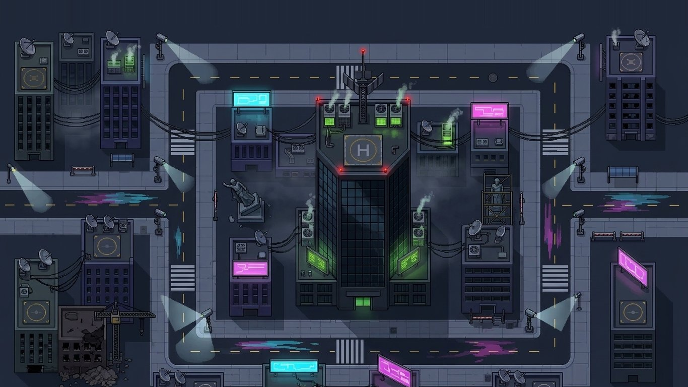

A WIKI DO MULTIVERSO
Metrópolis Prime está desabando. O Clichê está apagando o multiverso, e só três heróis meio tortos estão no caminho.


Vilão Explicador
Para para explicar o plano

Clone Defeituoso
Cada um sai de um jeito

Monstro Genérico
Tanque, e chefe a cada 10 ondas
Carregando o ranking...
HERÓIS
As três torres que defendem Metrópolis Prime. Cada uma evolui por 5 níveis de Poder, e cada nível tem uma forma com nome próprio.
Como o Poder cresce
Cada melhoria aplica um multiplicador sobre os valores do Poder 1. Intervalo menor quer dizer ataques mais rápidos.
| PODER | DANO | ALCANCE | INTERVALO |
|---|---|---|---|
| 1 | x1 | x1 | x1 |
| 2 | x2,6 | x1,12 | x0,82 |
| 3 | x6 | x1,26 | x0,66 |
| 4 | x14 | x1,42 | x0,50 |
| 5 | x34 (Arauto: x23,7) | x1,70 | x0,32 |
- No Poder 3 cada herói libera a habilidade especial.
- O Doutor Impacto não ganha dano: a melhoria aumenta o alcance (mais 15%) e a frequência do pulso.
- No modo infinito dá para passar do Poder 5. Só o dano continua subindo (x1,18 por nível), e o preço sobe x1,55 por nível.
Prioridade de alvo
O Arauto e o Doutor Impacto escolhem o alvo a cada disparo. Selecione a torre e clique na aba ALVO, ou aperte A.
- PRIMEIRO: o mais perto da base (padrão).
- ÚLTIMO: o mais atrás na rota.
- MAIS FORTE: o que tem mais vida.
- MAIS PERTO: o mais perto da torre.
A Dona Bala explode em volta dela, então não tem prioridade de alvo.
INIMIGOS
Os capangas do Clichê. A vida de todos cresce a cada onda, e a recompensa em fragmentos sai da vida de cada um.
Monstro Genérico, o chefão
Aparece a cada 10 ondas (10, 20, 30...), junto com a onda normal.
- Vida muito maior que a de um inimigo comum. É sempre o mais lento em campo.
- Recupera 3% da vida a cada 4 segundos.
- Escudo de imunidade: 7 segundos depois de entrar ele fica imune por 3 segundos, e repete a cada 8. Tiros no escudo mostram "0".
- Com o escudo ligado, as torres só miram nele se não houver outro inimigo no alcance.
Como lidar: use a janela do escudo para limpar o resto do campo, e deixe o Doutor Impacto segurando o chefe.
COMO JOGAR
Segure Metrópolis Prime por 20 ondas. Depois, veja até onde você aguenta no infinito.
O objetivo
Os inimigos andam por duas rotas até a base. Construa torres nos quadrados livres ao lado das ruas para derrubar todos antes que cheguem.
Vidas: você tem 4. Cada inimigo que chega à base tira 1. Com 0, a dimensão cai.
Fragmentos: o dinheiro do jogo. Você começa com 100 e ganha mais derrotando inimigos e limpando ondas.
Modos
História
Termina na onda 20. A nota sai das vidas que sobraram:
| 4 vidas | 3 estrelas |
| 2 ou 3 vidas | 2 estrelas |
| 1 vida | 1 estrela |
Infinito
Liberado ao vencer a história. Não tem fim. Depois de vencer, dá para seguir no infinito na mesma partida.
O mapa

Centro de Metrópolis Prime: duas rotas e as calçadas onde dá para construir.
Ondas
- Cada onda traz 1,5 inimigo por número da onda (a onda 10 tem 15).
- A próxima onda só vem depois que a atual é limpa. No modo manual você chama a próxima com Espaço. No automático ela vem 5 segundos depois.
- Limpar uma onda paga 25 + 8 x o número da onda em fragmentos.
- A vida dos inimigos dobra na onda 5 e dobra de novo a cada 5 ondas até a 20. No infinito ela segue subindo 1,5x a cada 5 ondas.
Construir, melhorar e vender
- Abra a loja (B ou CONSTRUIR) e escolha a torre, ou use 1 2 3.
- Com a torre na mão, o círculo de alcance aparece sob o cursor e fica verde sobre um quadrado livre.
- Clique direito ou ESC desistem da torre, e os fragmentos voltam.
- Segure Shift para construir várias iguais seguidas.
- Vender devolve 70% do que você investiu. O que foi gasto desde o início da última onda volta inteiro.
- F alterna entre 1x e 2x. Pausado, o jogo volta a 1x.
Contas e ranking
Ao clicar em JOGAR, entre com um apelido e senha (ou crie uma conta). Suas partidas vão para o ranking online, que guarda a melhor de cada jogador.
Dá para jogar sem conta: o resultado fica só no ranking local do aparelho.
Sem internet, o resultado espera e é enviado depois.
Dicas
- O Vilão Explicador para no meio do caminho para explicar o plano, e leva 50% mais dano enquanto discursa.
- Torres só alcançam o que está dentro do círculo. Clique numa torre para ver o alcance dela.
- No Poder 3 cada herói destrava a habilidade especial. O Poder 5 é um salto grande de força.
- O Doutor Impacto não causa dano: ponha ele perto de quem causa.
- O Clone Defeituoso copiou os poderes errado, e a vida dele varia muito de um para outro.
- Inimigos mais resistentes dão mais fragmentos.
- A cada 10 ondas vem um chefe. Ele é lento, mas se regenera com o tempo.
- Segure Shift ao construir para colocar várias torres iguais seguidas.
CONTROLES
Tudo funciona com o mouse. As teclas são atalhos. No celular, tudo é por toque.
| TECLA | AÇÃO |
|---|---|
| 1 2 3 | Escolher Arauto, Dona Bala ou Doutor Impacto |
| Shift | Segure ao construir para colocar várias torres iguais |
| B | Abrir a loja |
| Clique direito ou ESC | Desistir da torre na mão (os fragmentos voltam) |
| T | Melhorar a torre selecionada |
| V | Vender a torre selecionada |
| A | Trocar a prioridade de alvo |
| Espaço | Chamar a próxima onda |
| F | Velocidade 1x / 2x |
| P ou ESC | Pausar |
| Tab e Enter | Na tela de conta: trocar de campo e entrar |
RANKING
Quem segurou o Clichê por mais ondas
| # | JOGADOR | ONDA | FRAGMENTOS |
|---|
NOVIDADES
O que mudou nas últimas versões.
Corrige o ranking online, que dizia "sem conexão".
v0.74Contas com apelido e senha, ranking online no jogo e este site, que mostra o ranking ao vivo.
v0.73- Clique direito ou ESC desistem da torre escolhida, e os fragmentos voltam.
- O círculo de alcance aparece sob o cursor ao posicionar.
- Velocidade 2x (tecla F).
- Teclas 1, 2 e 3 escolhem a torre, e Shift constrói várias.
- O que foi gasto desde o início da última onda volta inteiro na venda.
- Prioridade de alvo para o Arauto e o Doutor Impacto.